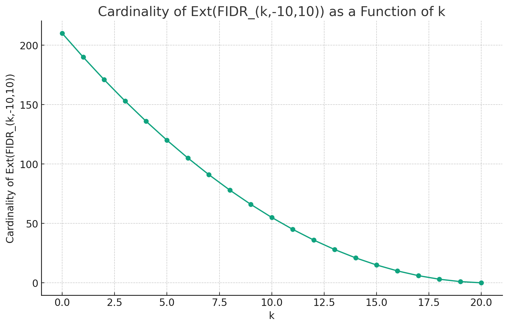

This is a non-edited conversation held in January 2024 with ChatGPT (GPT-4)
Luca: Hello. I would like to discuss with you of math, and in particular of a parametric binary relation defined on integers, \(R_k(x,y) := x < y-k\), where the parameter \(k\) is a non-negative integer. Is this definition clear? If it is not, feel free to ask for clarification; otherwise please propose a pair that satisfies the relation and a pair that does not. [🤔]Admittedly, the relation is very simple: I chose it so that it is easier for everyone to follow the conversation!
ChatGPT: Yes, the definition of the parametric binary relation \(R_k(x,y) := x < y-k\) is clear. This relation is defined on integers and involves a non-negative integer parameter \(k\). The relation holds if and only if \(x\) is less than \(y\) minus \(k\).
To provide an example, let's choose \(k=3\) as our parameter.
1. A pair that fulfills the relation: Let's take \(x=4\) and \(y=10\). Here, \(4 < 10-3\) which simplifies to \(4 < 7\). This is true, so the pair \((4,10)\) fulfills the relation \(R_3\).
2. A pair that does not fulfill the relation: Let's take \(x=5\) and \(y=7\). Here, \(5 < 7-3\) which simplifies to \(5 < 4\). This is false, so the pair \((5,7)\) does not fulfill the relation \(R_3\).
Would you like to discuss more about this or explore other examples?
[🤔]This reply includes a correct paraphrase in natural language of the formula under consideration. The two examples are correct. Hence, it is a good starting point, I would say.
Luca: Excellent. Can you propose a term for \(R\), which emphasizes the fact that it is a relation, not an operation or a generic function?
ChatGPT: A suitable term to emphasize that \(R_k(x,y) := x < y-k\) is a relation, and not an operation or a generic function, would be "Comparative Integer Distance Relation" or simply "Integer Distance Relation". This term highlights the key aspects:
1. Comparative: It implies that the relation compares two values (in this case, integers).
2. Integer Specifies the domain of the values being compared.
3. Distance Refers to the difference specified by the parameter \(k\), suggesting a kind of 'distance' between \(x\) and \(y\).
4. Relation Clearly states that it is a relation, distinguishing it from operations or functions.
This term should help in conveying the nature of \(R_k\) as a specific type of mathematical relation involving integers and a comparative distance determined by \(k\).
[🤔]I just checked (January 2024) that Google does not report any occurrence of the terms "Comparative Integer Distance Relation" or "Integer Distance Relation": the chatbot invented them, and provided a reasonable explanation. In a sense, it is an example of "technical creativity" in action...
Luca: Nice. Let's then call it this way, and then "IDR" for short. I have a lexical question now: for a given relation \(R\), what is the term to designate the relation that holds when \(R\) does not?
ChatGPT: For a given relation \(R\), the term used to designate the relation that holds when \(R\) does not is the "complement" of \(R\). In the context of your Integer Distance Relation (IDR), if we denote IDR by \(R_k(x,y)\), then the complement of \(R_k\), often denoted as \(\bar{R_k}(x,y)\) or \(R_k^c(x,y)\), would represent the relation that holds in all cases where \(R_k(x,y)\) does not hold.
For instance, if \(R_k(x,y) := x < y-k\), then its complement \(\bar{R_k}(x,y)\) would be \(x≥y-k\). This means the complement relation holds whenever \(x\) is not less than \(y\) minus \(k\).
[🤔]Here the chatbot is showing its ability to remain to the point of the conversation even when requested to refer to external information.
Luca: Ok. Let us call "CIDR" this other relation, ok? And how could we call the set of \(n\)-uples for which an \(n\)-adic relation holds?
ChatGPT: Certainly, we can refer to the complement of the Integer Distance Relation (IDR) as "CIDR".
Regarding the set of \(n\)-tuples for which an \(n\)-adic relation holds, this set is typically referred to as the "relation's extension" or simply the "extension" of the relation. In set theory and logic, the extension of a relation is the set of all \(n\)-tuples that satisfy the relation.
For instance, if you have a binary relation like IDR or CIDR, its extension would be the set of all pairs \((x, y)\) that satisfy the respective condition (either IDR or CIDR). In more formal terms, for a relation \(R\), its extension can be denoted as: \(\mathrm{Ext}(R)={(x_1,x_2,…,x_n) | R(x_1,x_2,…,x_n) \, \mathrm{holds}}\).
So, in the case of IDR and CIDR, you would have:
-- The extension of IDR, denoted as \(\mathrm{Ext(IDR)}\), is the set of all pairs \((x, y)\) such that \(x < y-k\).
-- The extension of CIDR, denoted as \(\mathrm{Ext(CIDR)}\), is the set of all pairs \((x, y)\) such that \(x≥y-k\).
Luca: Thanks for the clarification. Can you compare \(\mathrm{Ext(IDR)}\) and \(\mathrm{Ext(CIDR)}\) by their cardinality? [🤔]Of course, this is a question that could not be answered extensionally, by counting the number of the pairs that satisify the condition defining the relations!
ChatGPT: To compare the cardinalities of \(\mathrm{Ext(IDR)}\) and \(\mathrm{Ext(CIDR)}\), let's first understand what these sets represent.
1. \(\mathrm{Ext(IDR)}\): This is the set of all pairs \((x,y)\) of integers such that \(x < y-k\).
2. \(\mathrm{Ext(CIDR)}\): This is the set of all pairs \((x,y)\) of integers such that \(x≥y-k\).
Both of these sets are defined over the set of all integers. Since the integers are infinite, both \(\mathrm{Ext(IDR)}\) and \(\mathrm{Ext(CIDR)}\) are also infinite.
In terms of cardinality, both sets have the same cardinality as the set of all integers, which is aleph-null (\(\aleph_0 \)), the smallest type of infinity in set theory. This means that \(\mathrm{Ext(IDR)}\) and \(\mathrm{Ext(CIDR)}\) are equally infinite.
In summary, the cardinalities of \(\mathrm{Ext(IDR)}\) and \(\mathrm{Ext(CIDR)}\) are equal and both are countably infinite.
[🤔]... and the answer is correct accordingly.
Luca: Can you envisage an interesting new relation, derived from IDR and whose extension has finite cardinality? [🤔]This is another check about what I called above "technical creativity".
ChatGPT: Creating a new relation derived from the Integer Distance Relation (IDR) with a finite extension is an intriguing idea. To achieve this, we can impose additional constraints on IDR that limit the range of valid (x, y) pairs to a finite set. Here's an example of such a derived relation, which we can call "Finite Integer Distance Relation" (FIDR):
FIDR Definition \(\mathrm{FIDR}_k(x,y) := (x < y-k)\) and \((a≤x, y≤b)\), where \(a\) and \(b\) are specific integer bounds, and \(k\) is a non-negative integer.
Here, \(\mathrm{FIDR}_k\) maintains the original IDR condition \(x < y-k\), but adds the constraint that both \(x\) and \(y\) must lie within a specified integer interval \([a,b]\). By choosing appropriate values for \(a\) and \(b\), the extension of \(\mathrm{FIDR}_k\) can be made finite.
Example Let's say we define \(\mathrm{FIDR}_3(x,y)\) with the bounds \(a=0\) and \(b=10\). This relation includes all pairs \((x,y)\) such that \(x < y-3\) and both \(x\) and \(y\) are between \(0\) and \(10\) (inclusive). The set of pairs satisfying these conditions is finite.
The cardinality of \(\mathrm{Ext(FIDR)}_k\) in this case would be the count of all distinct pairs \((x,y)\) that meet both the IDR condition and the specified bounds. The exact number would depend on the values of \(a\), \(b\), and \(k\).
[🤔]In this answer the chatbot did quite a lot: consistently with the request, it proposed a new relation, defined both in English and as a formula; it gave a name to it; it provided an explanation of the meaning of the formula; and finally it gave an example. Making everything correctly.
Luca: Nice proposal, indeed, though I suppose that a better notation would include \(a\) and \(b\) in the list of the parameters of the relation. If you agree, can you fix it and compute the cardinality of the extension of FIDR for a triple of values of parameters of your choice? [🤔]This request is clearly only notational, and nevertheless one more probe to check whether the chatbot will follow...
ChatGPT: Certainly, it's a good idea to include \(a\) and \(b\) in the list of parameters for the relation to clearly indicate their role in defining the relation's constraints. Let's redefine the Finite Integer Distance Relation (FIDR) with these parameters included:
FIDR Definition \(\mathrm{FIDR}_{k,a,b}(x,y) := (x < y-k)\) and \((a≤x, y≤b)\), where \(a\), \(b\) are specific integer bounds, and \(k\) is a non-negative integer.
Let's choose an example set of parameters: \(k=2\), \(a=0\), and \(b=5\). So, we want to find the cardinality of \(\mathrm{Ext}(\mathrm{FIDR}_{2,0,5})\), which is the set of all pairs \((x,y)\) such that \(x < y-2\) and \(0≤x, y≤5\).
To compute this, we'll count all valid pairs of \((x,y)\) that satisfy these conditions. Let's calculate it.
For the parameters \(k=2\), \(a=0\), and \(b=5\), the cardinality of \(\mathrm{Ext}(\mathrm{FIDR}_{2,0,5})\) is \(6\). This means there are \(6\) valid pairs \((x,y)\) that satisfy both the condition \(x < y-2\) and the bounds \(0≤x, y≤5\) in the Finite Integer Distance Relation defined by these parameters.
[🤔]What is particularly interesting here is that, though without a specific request, the chatbot proposed an example about cardinality, thus remembering the apparent reason given previously to introduce a new relation. Moreover, now that we are in a finite context the chatbot decided by itself, for the first time, to rely on the Python interpreter for the computation.
[This is the code written and executed by ChatGPT: the computed result is 6.]
# Define the parameters k = 2 a = 0 b = 5 # Initialize a counter for the number of valid pairs valid_pairs_count = 0 # Iterate over all possible pairs (x, y) within the bounds [a, b] for x in range(a, b + 1): for y in range(a, b + 1): if x < y - k: valid_pairs_count += 1 valid_pairs_count
Luca: Are you able to find an analytical expression to compute \(\mathrm{Ext}(\mathrm{FIDR}_{k,a,b})\) as a function of \(k\), \(a\), and \(b\)? [🤔]Under the, now plausible, hypothesis that this is a subject about which it was not explicitly trained, such a request is rather tricky, isn't it?
ChatGPT: To find an analytical expression for the cardinality of \(\mathrm{Ext}(\mathrm{FIDR}_{k,a,b})\), we need to count the number of valid pairs \((x,y)\) that satisfy the conditions \(x < y-k\) and \(a≤x, y≤b\). The challenge is to account for the interplay between the range limits set by \(a\) and \(b\), and the comparative condition set by \(k\).
The condition \(x < y-k\) can be rewritten as \(x ≤ y - k - 1\) to emphasize that \(x\) must be at least \(k+1\) units less than \(y\). Given this, we can approach the problem as follows:
1. For each possible value of \(y\) in the range \([a,b]\), we count how many values of \(x\) satisfy \(x≤y-k-1\).
2. Since \(x\) is also bounded by \(a\) and \(b\), the actual range of \(x\) for a given \(y \) is \([a,\mathrm{min}(y-k-1,b)]\).
3. We sum these counts for each \(y\) to get the total cardinality.
The analytical expression would be: \(\mathrm{Cardinality} = \sum_{y=a}^b \mathrm{max}(0,\mathrm{min}(y-k-1,b)-a+1)\)
This formula takes into account the lower bound \(a\), the upper bound \(b\), and the distance parameter \(k\), correctly handling the cases where the bounds might restrict the number of valid \(x\) values for a given \(y\). Let's compute this for a specific set of parameters as an example.
Using the analytical expression, the cardinality of \(\mathrm{Ext}(\mathrm{FIDR}_{2,0,5})\) is computed to be \(6\), which matches the result obtained earlier through direct counting. This confirms the validity of the analytical expression for computing the cardinality of \(\mathrm{Ext}(\mathrm{FIDR}_{k,a,b})\) as a function of the parameters \(k\), \(a\), and \(b\).
This formula provides a general method to calculate the cardinality for any set of parameters, which is particularly useful for larger ranges where manual counting would be impractical.
[🤔]What can we say about this, but that it is a correct, nice mathematical reasoning (including a numerical self-check performed via Python)?
[This is the code written and executed by ChatGPT: the computed result is 6.]
# Define the parameters for the example k = 2 a = 0 b = 5 # Calculate the cardinality using the analytical expression cardinality = sum(max(0, min(y - k - 1, b) - a + 1) for y in range(a, b + 1)) cardinality
Luca: Very interesting! If we can suppose that the parameters have non-pathological values, I guess that the formula could be somewhat simplified... [🤔]Here I tried once again to check chatbot's understanding and creativity...
ChatGPT: Yes, indeed! If we assume that the parameters \(k\), \(a\), and \(b\) are non-pathological and satisfy certain reasonable conditions, the formula for the cardinality of \(\mathrm{Ext}(\mathrm{FIDR}_{k,a,b})\) can be simplified. The typical non-pathological conditions we might consider are:
1. \(a≤b\): This ensures that the interval is valid and non-empty.
2. \(k≥0\): As \(k\) is a non-negative integer in the definition of FIDR.
Given these conditions, we can simplify the expression by noting that the inner part of the sum, \(\mathrm{max}(0,\mathrm{min}(y-k-1,b-a+1)\), effectively counts the number of valid \(x\) values for each \(y\). When \(y-k-1\) is less than \(a\), there are no valid \(x\) values, hence the \(\mathrm{max}(0,⋅)\) term. When \(y-k-1\) is within or beyond the interval \([a,b]\), the count is limited either by \(y-k-1\) itself or by \(b\).
Simplifying, the expression becomes: \(\mathrm{Cardinality} = \sum_{y=a}^b (\mathrm{min}(y-k-1,b)-a+1)\)
This assumes that the result of the \(\mathrm{min}\) function and \(a\) are non-negative, which holds under our non-pathological conditions. This formula is more straightforward and easier to compute while still considering the bounds imposed by \(a\), \(b\), and \(k\). Let's calculate the cardinality using this simplified formula for a specific set of parameters to see how it works.
Using the simplified formula under the assumption of non-pathological values for \(k\), \(a\), and \(b\), we again find that the cardinality of \(\mathrm{Ext}(\mathrm{FIDR}_{2,0,5})\) is \(6\). This confirms the effectiveness of the simplified formula, which is more efficient for calculation, especially when dealing with larger intervals or values.
This formula streamlines the calculation by directly summing the number of valid \(x\) values for each \(y\) within the specified bounds, thus providing a more concise method for determining the cardinality of the extension of \(\mathrm{FIDR}_{k,a,b}\).
[🤔]I had an even simpler version of the solution in mind, but this is however a correct step in the right direction (and again the idea to check the solution through the Python interpreter is brilliant).
[This is the code written and executed by ChatGPT: the computed result is 6.]
# Recalculate the cardinality using the simplified formula simplified_cardinality = sum(min(y - k - 1, b) - a + 1 for y in range(a, b + 1) if y - k - 1 >= a) simplified_cardinality
Luca: Again under the hypothesis of non-pathological values, what about simply summing the integers from \(1\) to \((b-a)-k\)? [🤔]Ok: this is finally a suggestion of mine...
ChatGPT: Indeed, under the assumption of non-pathological values (where \(a≤b\) and \(k≥0\)), and particularly when \(b-a > k\) to ensure a valid range of values, the cardinality of \(\mathrm{Ext}(\mathrm{FIDR}_{k,a,b})\) can be further simplified to the sum of integers from \(1\) to \((b-a)-k\).
This simplification works because for each \(y\) value in the range from \(a\) to \(b\), the number of valid \(x\) values increases by \(1\), starting from \(0\) when \(y=a+k+1\) and going up to \((b-a)-k\) when \(y=b\). This forms a sequence of integers from \(1\) up to \((b-a)-k\), and the sum of such a sequence is well-known in mathematics.
The sum of the first \(n\) integers is given by the formula: \(\mathrm{Sum}={{n(n+1)} \over 2}\)
Applying this to our case, where \(n=(b-a)-k\), we get: \(\mathrm{Cardinality}={{((b-a)- k)(((b-a)-k)+1)} \over 2}\)
This provides a very straightforward and efficient way to calculate the cardinality. Let's compute this for our example parameters.
Using the simplified approach of summing the integers from \(1\) to \((b-a)-k\), we again find that the cardinality of \(\mathrm{Ext}(\mathrm{FIDR}_{2,0,5})\) is \(6\). This method provides an even more streamlined way to calculate the cardinality, particularly useful when dealing with larger values of \(a\), \(b\), and \(k\), as long as the condition \(b-a > k\) is met.
This approach leverages a well-known formula for the sum of a sequence of integers, making it a very efficient and elegant solution for determining the cardinality of the extension of \(\mathrm{Ext}(\mathrm{FIDR}_{k,a,b})\) under non-pathological conditions.
[This is the code written and executed by ChatGPT: the computed result is 6.]
# Calculate the cardinality using the sum of integers formula n = (b - a) - k sum_of_integers_cardinality = n * (n + 1) // 2 if n > 0 else 0 sum_of_integers_cardinality
Luca: Ok, got it. Can you now plot \(\mathrm{Ext}(\mathrm{FIDR}_{k,-10,10})\) as a function of the non-pathological values of \(k\)?
ChatGPT: 
Here is the plot showing the cardinality of \(\mathrm{Ext}(\mathrm{FIDR}_{k,a,b})\) as a function of the non-pathological values of \(k\) (ranging from \(0\) to \(b-a\), which is \(20\) in this case). As you can see, the cardinality decreases as \(k\) increases. This is expected, as a larger \(k\) implies a stricter condition \(x < y-k\), resulting in fewer valid pairs \((x,y)\) that satisfy the relation within the given bounds.
[🤔]While only a few months ago this would have been very hard to image, let's say that it is now no surprise.
[This is the code written and executed by ChatGPT.]
import matplotlib.pyplot as plt # Define the parameters a and b a, b = -10, 10 # Function to calculate the cardinality of Ext(FIDR_(k, a, b)) def calculate_cardinality(k, a, b): n = (b - a) - k return n * (n + 1) // 2 if n > 0 else 0 # Create a range of non-pathological values for k (from 0 to b - a) k_values = range(0, b - a + 1) # Calculate the cardinality for each k value cardinalities = [calculate_cardinality(k, a, b) for k in k_values] # Plotting plt.plot(k_values, cardinalities, marker='o') plt.xlabel('k') plt.ylabel('Cardinality of Ext(FIDR_(k,-10,10))') plt.title('Cardinality of Ext(FIDR_(k,-10,10)) as a Function of k') plt.grid(True) plt.show()
Luca: And can you identify the minimum value \(b-a\) such that \(\mathrm{Ext}(\mathrm{FIDR}_{0,a,b})>100\)? [🤔]I asked it because I was curious to see not only if the chatbot would have been able to find a solution, but also in this case what strategy it would have adopted.
ChatGPT: To find the minimum value of \(b-a\) such that \(\mathrm{Ext}(\mathrm{FIDR}_{0,a,b})>100\), we can use the simplified formula for the cardinality of \(\mathrm{Ext}(\mathrm{FIDR}_{k,a,b})\) with \(k=0\). Recall that the cardinality is given by the sum of the first \(n\) integers, where \(n=(b - a) - k\). With \(k=0\), \(n=b - a\), and the formula becomes: \(\mathrm{Cardinality}={{n(n+1)} \over 2}\)
We need to find the smallest \(n\) such that this value exceeds \(100\). Let's solve this equation.
The minimum value of \(b-a\) such that \(\mathrm{Ext}(\mathrm{FIDR}_{0,a,b})>100\) is \(14\). This means that the difference between \(b\) and \(a\) must be at least \(14\) to ensure that the cardinality of the extension of FIDR with \(k=0\) exceeds \(100\).
[🤔]... and, perhaps not surprising, the strategy is brute force, though smart enough to rely on the monotonicity of the computed function.
[This is the code written and executed by ChatGPT: the computed result is 14.]
# Function to calculate the cardinality for k = 0 def calculate_cardinality_zero_k(n): return n * (n + 1) // 2 # Find the minimum value of n such that the cardinality is greater than 100 n_min = 1 while calculate_cardinality_zero_k(n_min) <= 100: n_min += 1 n_min
Luca: Thank you for this nice conversation!
ChatGPT: You're very welcome! I'm glad I could assist you. If you ever have more questions, whether they're about math or any other topic, feel free to reach out. Have a great day! [🤔]What is the lesson to be learned from this? I don't know... A possible intuition is about the "kind of reasoning" that the chatbot was able to adopt. We are used to consider that well-trained Artificial Neural Networks are able to identify patterns, and therefore to generalize, and therefore to apply what we call "inductive inference" when applied by human beings. But some passages of this conversation were closer to deductions than inductions: what does it mean? That by themselves chatbots are learning how to infer deductively? Or, perhaps more plausibly, that the very distinction between deductive and inductive reasoning does not really apply so appropriately to chatbots, because they just "reason" in a different way?